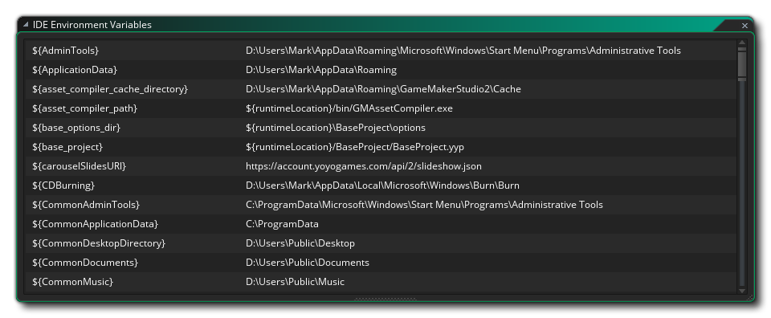

Ce menu sert à ouvrir les fenêtres IDE générales ancrées. Puisque les quais peuvent être réorganisés et que le contenu peut être supprimé en tant que fenêtre autonome ou même entièrement fermé, cette fenêtre vous permet de les rouvrir si vous trouvez que vous en avez besoin pour quelque chose. Les fenêtres peuvent être ouvertes d'ici sont les ressources fenêtre et toutes les différentes sorties fenêtres (sortie, Recherche, SCM, points d' arrêt et Compile / erreurs de syntaxe).
Ensuite, vous pouvez ouvrir la liste Recent Windows, et vous avez également la possibilité d'ouvrir la fenêtre Variables d'environnement dans laquelle vous pouvez voir les différents chemins vers lesquels pointent les différentes variables d'environnement utilisées dans les préférences. Ces variables ne peuvent pas être éditées (ni leur nom ni leur chemin / paramètre) mais vous pouvez sélectionner et copier / coller n'importe lequel d'entre elles pour une utilisation ailleurs. 
Enfin, vous avez la possibilité d'ouvrir le didacticiel Windows. Cela ré-ouvrira toutes les fenêtres qui sont liées à un projet de tutoriel que vous avez ouvert, mais seulement si le projet est celui qui a été créé dans le cadre d'un tutoriel (sinon, cette option sera indisponible). Pour plus d'informations sur la création de vos propres projets de didacticiels, consultez la section sur le Marketplace (car tous les didacticiels sont créés, hébergés et téléchargés à partir de là).